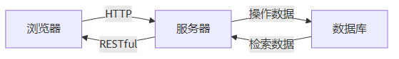
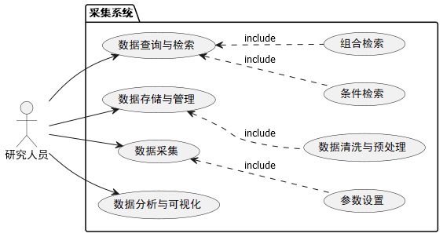
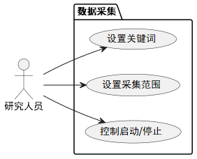
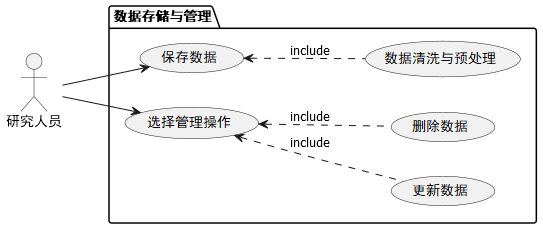
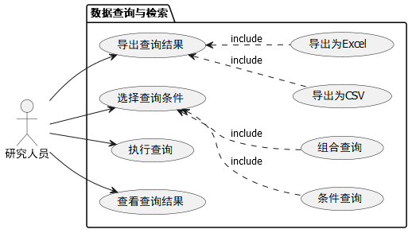
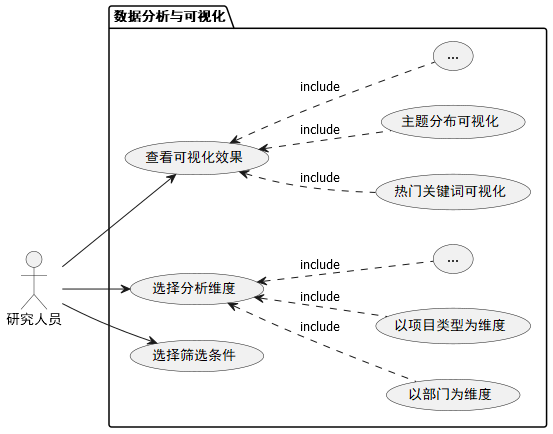
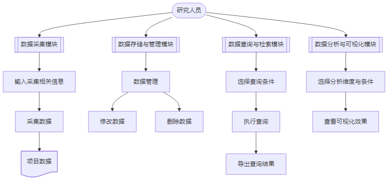
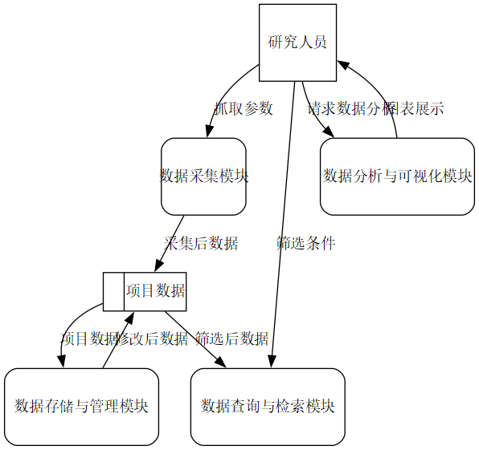

自2015年5月起，国家自然科学基金委员会（NSFC）发布了“国家自然科学基金委员会关于受资助项目科研论文实行开放获取的政策声明”。该政策强调科研人员在发表国家自然科学基金资助项目的研究论文时，需将经过同行评议的最终审定稿存储至“国家自然科学基金基础研究知识库”，并确保在发表后12个月内实现开放获取。这一举措不仅促进了基础研究成果的共享与传播，还为推动科学技术进步、提升国家创新能力提供了重要支持。
随着国家自然科学基金资助项目数量的增加，科研成果的产生和发表数量迅速攀升，如何有效地收集、管理和发布这些成果成为一项重要而紧迫的任务。然而，现有的科研数据管理系统难以满足国家自然科学基金项目日益增长的需求。这限制了科研成果的有效传播，影响了科研资源的有效利用。因此，开发一套高效、灵活的数据采集系统显得尤为重要。
基于Spring Boot的数据采集系统可以为科研人员提供一个直观易用的平台。这不仅有助于实现国家自然科学基金的开放获取政策，还能够提高研究成果的可见度，促进公众对科学研究的关注和理解。系统将实现自动化的数据收集和存储流程，减少科研人员在数据处理中的时间成本，使他们能将更多精力投入到实际研究中。此外，系统可以集成数据分析和可视化工具，为科研管理部门提供实时的数据监测与分析功能，帮助管理人员更好地跟踪项目进展、评估研究成果，支持基于数据的决策制定。
该系统还将增强研究成果的透明度，使科研活动更具可追溯性，促进科研诚信，减少学术不端行为。公众能够更方便地获取和理解科研成果，增强社会对科学研究的信任。系统的设计与实施将紧密结合国家自然科学基金委员会的政策要求，确保资助项目的成果能够按规定及时、规范地存储和发布。这有助于提高国家自然科学基金的管理水平，提升科研项目的社会影响力。系统还可以支持其他形式的科研成果的存储与共享，推动科研成果的多样化管理，进一步促进基础研究的发展。
综上所述，基于Spring Boot的国家自然科学基金数据采集系统的开发，不仅符合国家推动科研成果开放获取的政策要求，具有重要的理论和实践意义，还将提升科研成果的管理效率、增强科研透明度、支持科学决策，为科研人员和管理部门提供切实的帮助，推动科学研究的持续进步。
近年来，国内关于科研成果开放获取与数据管理的研究逐渐增多，反映了科研界对信息透明度和共享的高度重视。国家自然科学基金委员会（NSFC）推出的开放获取政策，要求科研人员在发表国家自然科学基金资助项目的研究论文时，将最终审定稿存储至“国家自然科学基金基础研究知识库”，并确保在发表后12个月内实现开放获取。这一政策的实施，加速了科研成果的传播与应用，提升了科研成果的可见度，促进了学术交流与合作。随着国家对科研成果共享的重视，越来越多的高校和科研机构开始探索建立数据管理平台 [1]，以满足科研人员对高效数据管理的需求。这些平台集成了数据存储、共享、分析等多种功能，支持科研数据的标准化管理，促进科研数据的有效利用。诸如“中国知网”、“万方数据”的多个科研信息系统发挥了重要作用，提供论文的存储与检索功能，并集成引文分析与影响力评估等工具，帮助科研人员更好地管理和分享研究成果。基础研究知识库的建设也得到了重视，研究者探索如何有效构建和维护知识库，以提升基础研究成果的开放性和可访问性，为学术界提供丰富的数据支持。
与国内相比，国外在科研成果的开放获取与数据管理领域的研究显得更加成熟，特别是在欧美地区。自2000年代初以来，开放获取运动迅速发展，众多国家制定了相关政策，鼓励科研人员在学术期刊上实现开放获取，并将其作为资金资助的条件。例如，美国的“开放数据计划”和英国的数据共享协议，旨在推动科研数据的开放与共享，提高研究的透明度和可重复性。这些政策促进了科研成果的广泛传播，推动了科学研究的可持续发展。多个数据管理和共享平台如Figshare、Zenodo、Dryad等相继建立，为科研人员提供了便捷的数据存储与共享服务。这些平台允许科研人员上传各类研究数据，包括原始数据集、代码、方法学说明等，并为其提供永久的数字对象标识符（DOI），方便引用和访问。这些平台不仅促进了数据的开放获取，也为后续研究提供了丰富的数据基础，提升了科研的透明度和协作效率。
在国际范围内，不少期刊与组织积极推动科研数据管理规范化，并主持制定了相关技术标准和指南。国际数据管理标准化组织（ISO）和国际数据共享组织（ODI）等机构提出了一系列关于数据管理和共享的最佳实践，为科研人员提供系统化的指导。许多国际顶尖期刊如《自然》、《科学》等在开放获取方面发挥了重要引领作用，推出开放获取选项，促进研究成果的广泛传播。这些期刊为科研人员提供了展示研究成果的平台，推动了科研成果的传播，提升了科研工作的透明度和公信力。
随着大数据和人工智能技术的迅速发展，各类数据分析和挖掘工具已成为科研人员获取洞察、提升研究效率、支持科学决策的重要手段。这些工具能够帮助科研人员从海量数据中提取有价值的信息，为科研项目的决策和政策制定提供了有力支持。这不仅提高了科研的深度和广度，还推动了学术领域的跨学科合作和知识创新。在研究过程中，数据分析工具的应用可以揭示数据背后的模式和趋势，挖掘潜在的科学问题，从而使科研成果更具指导意义，帮助管理者更有效地评估研究进展与项目影响力。未来的研究将聚焦于进一步优化数据分析方法，使其更好地适应不同科研领域的数据特征。与此同时，随着数据共享和开放获取的不断普及，还应探索如何通过智能化手段提升数据挖掘的精准性和可解释性，从而增强科研工作的透明度与可追溯性，为科研管理和政策制定提供更为全面、科学的支持。
在当前科研领域，国家自然科学基金项目的科研成果管理与开放获取面临诸多挑战，尤其是在数据的收集、存储和共享方面。现有系统往往无法满足日益增长的科研成果需求，导致信息传播不畅，资源利用效率低下。为了解决这一问题，本课题将采用多种技术和工具开发一套基于Spring Boot的国家自然科学基金数据采集系统。该系统旨在实现科研成果的高效管理与开放获取，帮助科研人员快速获取所需数据，提升科研透明度和公众参与度。具体研究内容包括：
（1）深入分析国家自然科学基金数据采集系统的用户需求，明确系统的设计目标，确立功能性和非功能性需求，以确保系统能够有效支持科研人员的数据管理需求。
（2）对数据采集系统进行详细设计，包括系统的技术架构和功能架构，采用MyBatis进行数据持久化，利用Selenium实现自动化数据采集，并设计MySQL数据库结构，以高效存储和管理科研成果数据。
（3）实现数据的自动化采集与管理功能，通过定时任务定期从国家自然科学基金相关网站抓取科研成果信息，构建系统化的数据仓库，方便用户进行数据查询和统计分析。
（4）集成数据分析与可视化模块，利用ECharts实现科研成果的可视化展示，帮助管理人员实时监控科研项目进展，并通过图表分析科研数据的趋势和关联。
第一章绪论，本章介绍研究的背景与意义，分析国内外关于科研成果管理与开放获取的研究现状，明确本研究的目标与内容，最后概述论文的组织结构。
第二章关键技术介绍，本章将重点介绍本系统所采用的关键技术，包括后端开发技术和前端开发技术，并阐述这些技术在系统开发中的重要性和应用。
第三章可行性分析，本章对系统的可行性进行全面分析，包括技术可行性、经济可行性和操作可行性，评估系统在实施过程中可能遇到的挑战及其解决方案。
第四章需求分析，本章将详细分析系统的需求，分为功能需求、非功能需求和数据需求，以确保系统设计满足科研人员的实际使用需求。
第五章系统设计，本章围绕系统的总体架构、功能设计及数据库设计展开，描述系统的整体构架和各模块的具体实现方式，确保系统的可扩展性与高效性。
第六章系统实现，本章将介绍系统的运行环境、各项具体功能的实现过程以及系统的部署步骤，确保系统能够在实际环境中顺利运行。
第七章结论与展望，本章总结研究的主要成果与创新点，讨论系统在实际应用中的效果与影响，并展望未来的研究方向和系统的进一步优化。
Selenium 是一个功能强大的自动化网页浏览器操作库，最初设计的目的在于进行网页测试。然而，随着网络应用的复杂性增加和数据需求的增长，Selenium 的应用逐渐扩展到网页爬虫领域，成为数据采集和自动化操作的重要工具。使用 Selenium，我们可以通过编写代码来控制浏览器的行为，实现一系列操作，比如点击按钮、滚动页面。Selenium 提供了多种方法来定位网页元素，包括 ID、名称、类名、CSS 选择器和 XPath。这些定位方法让开发者能够快速而精确地找到需要操作的元素，便于实现复杂的交互。
与许多传统的爬虫技术相比，Selenium 的最大优势在于其处理动态内容的能力。许多现代网页依赖 JavaScript 动态生成内容，这使得传统的爬虫技术难以获取所需数据。Selenium 通过显示等待和隐式等待机制，可以有效地处理这些动态生成的网页元素，确保在元素加载完成后再进行操作，从而避免因元素尚未渲染而导致的错误。
在 Spring Boot 问世之前，Spring Framework 需要大量的XML配置，这使得我们在配置 Spring 特性和解决业务问题之间需要频繁切换思维，导致配置编写占用了大量的时间，从而降低了开发效率。此外，项目的依赖管理也是一项费时费力的工作，我们不仅需要分析要导入哪些库的坐标，还要解决与这些库存在依赖关系的其他库的版本问题。如果依赖版本选择不当，随之而来的不兼容问题会严重影响项目的开发进度。
为了解决这些问题，Pivotal 团队推出了开源框架 Spring Boot，旨在简化Spring应用的创建和部署。它提供了丰富的 Spring Framework支持，能够帮助开发者快速构建企业级应用。 Spring Boot 通过自动配置功能减少了复杂性，同时支持多种基于JVM的开源框架，缩短了开发时间，使开发变得更加简单和高效。基于“约定优于配置”的理念，Spring Boot 显著减少了我们配置 XML 文件的时间，使得我们能够专注于业务逻辑的编写，从而显著提高了开发效率并缩短了项目周期。
MyBatis 是一款出色的持久层框架，支持自定义 SQL、存储过程和高级映射。它大大简化了 JDBC 操作，免去了手动编写参数设置和结果集处理的繁琐代码。通过简单的 XML 配置或注解，MyBatis 能够轻松将原始数据类型、接口和 Java POJO 映射为数据库中的记录。
与 Spring Framework 中的 Spring Data JPA 相比，MyBatis 在处理复杂 SQL 操作上更具优势，特别是在多表联合查询和存储过程调用等场景下。它还允许我们手动优化 SQL 语句，以提升查询性能，这对处理大量数据的应用尤为关键。自3.x版本以来，MyBatis 引入了注解配置方式，进一步简化了映射关系的配置，使开发更加高效。
MySQL 是一个开源的关系型数据库管理系统，由瑞典的 MySQL AB 公司开发，现隶属于 Oracle 旗下。它将数据保存在不同的表中，而不是将所有数据放在一个大仓库内，这样既提高了数据的存储效率，又增加了速度和灵活性。MySQL 支持大型数据库，可以处理包含上千万条记录的数据，支持 32 位系统下表文件最大 4GB 和 64 位系统下最大 8TB 的表文件。MySQL 使用标准的 SQL 数据语言，并能够在多个操作系统上运行，支持多种编程语言，这使得它成为 Web 程序开发的理想选择。
Vue是一款用于构建用户界面的JavaScript框架。它基于标准的HTML、CSS和JavaScript，并额外提供了一套声明式和组件化的编程模型，使我们能够清晰地描述最终输出的HTML与JavaScript状态之间的关系，帮助我们高效地创建用户界面。无论是简单还是复杂的界面，Vue都能胜任。同时，Vue会自动跟踪 JavaScript 状态并在其发生变化时响应式地更新 DOM。
在传统的前端开发场景下，如果我们想将数据渲染到页面上，需要进行频繁的DOM操作才能达到想要的效果。而作为基于MVVM架构的渐进式框架，Vue.js简化了用户界面与业务逻辑之间的依赖关系，解决了数据频繁更新的问题。MVVM模式有助于将应用程序的业务和表示逻辑与用户界面清晰分离。保持应用程序逻辑和UI之间的清晰分离有助于解决许多开发问题，并使应用程序更易于测试、维护和演变。它还可以显著提高代码重用机会，并允许开发人员和UI设计人员在开发应用各自的部分时更轻松地进行协作。
ECharts是一款纯JavaScript实现的可视化库，兼容绝大部分浏览器，提供了直观、生动、可交互、可高度个性化定制的数据可视化图表。数据可视化是指将数据以图形图像形式表示，以此来挖掘其中未知的信息。数据可视化可以帮助我们解释数据模式、趋势、统计数据和数据相关性，而这些内容在其他呈现方式下可能难以被发现。
当前的技术环境为本课题提供了坚实的基础。Spring Boot 作为一种轻量级的Java开发框架，通过模块化设计和自动配置功能简化了开发流程。这不仅提升了系统开发效率，还为系统的扩展性和维护性提供了保障，使得后续功能的添加与调整变得更加便捷。MyBatis 作为持久层框架，具有高效的数据库操作能力，尤其适用于处理复杂SQL查询和大规模科研数据存储。其灵活的映射机制确保了数据的准确性和访问性能，为系统的稳定运行打下了坚实的基础。Selenium 通过自动化浏览器操作，有效应对现代网页动态内容抓取的问题，使得科研数据的采集更加精准和高效。其强大的元素定位功能和等待机制能够处理JavaScript生成的动态内容，确保系统能够实时获取最新的科研成果信息。Vue.js 与 ElementUI 的结合，为系统前端提供了灵活的界面设计，使用户能够方便地进行数据操作和交互。Vue.js 的组件化结构不仅提高了开发效率，也使得系统的维护与扩展变得更加容易。ECharts 的数据可视化功能能够清晰展现科研数据的趋势与关联，为管理人员的决策提供数据支持，增强了系统的实用性和用户体验。
综合以上因素，从技术角度看，开发一个基于Spring Boot的国家自然科学基金数据采集系统是完全可行的。这一系统将能够高效地支持科研成果的管理与开放获取，推动科研工作的透明度与可追溯性。
在操作可行性分析中，我们需要评估基于Spring Boot的国家自然科学基金数据采集系统在日常运维和使用过程中的操作性，包括系统的易用性、可维护性和安全性等方面。该系统面向科研人员和科研管理部门，设计了简洁、直观的操作界面，使用户能够轻松进行数据采集、存储、管理和查询。前端采用Vue.js和ElementUI结合实现，确保了交互界面的友好性与响应速度，并通过ECharts实现数据可视化，帮助用户快速理解和分析数据趋势。系统设计避免了复杂的配置，用户可通过简单指引快速上手，减少了学习成本，提升了可操作性。
后端基于Spring Boot和MyBatis构建，具有良好的模块化特性，功能模块间解耦性高，便于后续扩展和更新。系统采用分层架构，并使用Selenium进行网页动态内容抓取，数据采集过程通过定时任务自动执行，减少了人工干预。在数据库设计上，系统使用MySQL数据库，合理的索引设计与数据结构确保了查询效率和存储的扩展性。同时，MyBatis简化了数据持久化操作，便于系统维护。系统文档将详细记录各模块的功能与接口，方便开发和运维人员后续维护工作。
为保证数据的安全性，系统引入了用户认证和权限控制机制，确保只有授权用户才能访问和操作数据。通过数据加密和网络通信加密（如HTTPS），保障了数据传输安全。系统还包括数据备份和恢复机制，以应对数据丢失或灾难恢复需求。Selenium自动化操作遵循国家自然科学基金相关网站的访问规则，避免因频繁访问导致的安全问题或IP封禁风险。
系统基于Spring Boot开发，具有良好的跨平台兼容性，能够在多种操作系统上顺利运行，且对硬件配置需求相对较低。系统支持模块化扩展，未来可在数据采集功能中引入更高效的爬虫技术或在数据分析模块中增加高级机器学习算法，进一步提升智能化水平。
在经济可行性方面，开发和维护基于Spring Boot的国家自然科学基金数据采集系统确实需要一定的初期投资，包括软硬件资源、人力资源等。然考虑到该系统在科研数据管理和开放获取方面的潜在价值，这些成本是合理的。随着国家自然科学基金政策的推动，科研成果的开放获取将促进学术交流与合作，提升科研项目的社会影响力，从而为科研人员和管理部门提供更高效的数据管理工具。
该系统能够显著提高科研人员在数据采集、存储和共享过程中的效率，使他们能够更专注于核心研究工作。随着科研数据需求的增加，系统所提供的数据分析与可视化功能将有助于科研管理部门实时监控项目进展，支持基于数据的决策制定。这有助于提升科研成果的可见度，为科研单位和相关机构提供更准确的决策支持，进一步提高资源的有效利用率。
值得一提的是，该系统还可以探索商业化运作的机会，比如提供数据分析咨询服务、定制化解决方案等，从而为项目的持续发展提供经济支持。通过与高校、科研机构以及政府部门的合作，该系统有望创造更多的经济价值，实现可持续发展。因此，从长远来看，基于Spring Boot的国家自然科学基金数据采集系统的经济投资是可行的，预期回报率高，具有良好的市场前景。
从社会可行性角度分析，随着国家自然科学基金委员会推动科研成果开放获取的政策不断深入，科研数据的透明度与共享程度正日益受到重视。在这一背景下，基于Spring Boot的国家自然科学基金数据采集系统的开发，不仅能提高科研成果的可见度，还能够有效促进学术交流与合作，增强科研人员与社会公众之间的信任关系。
该系统为科研人员提供了一个高效、便捷的数据管理平台，使他们能够快速获取、存储和分析科研数据，从而提高研究效率。这种高效的数据管理方式将有助于科研成果的及时发布，加强科研活动的透明度，有利于建立良好的科研生态，降低学术不端行为的发生。
随着科研成果的开放共享，公众对科学研究的认知将进一步提升。这一系统能够帮助非专业人士更好地理解科研成果，促进科学知识的传播和应用，增强社会对科学研究的关注度和信任度。通过将科研成果与社会需求结合，该系统还将助力推动国家创新能力的提升。
因此，从社会发展与科研文化建设的角度来看，基于Spring Boot的国家自然科学基金数据采集系统的研究与实施不仅具有重要的社会意义，也将为推动科学研究的持续进步与社会发展做出积极贡献。
功能需求分析是对软件系统进行研究、分析，确定其必须做什么、包含哪些操作的需求定义。基于Spring Boot的国家科学基金数据采集系统主要针对国家自然科学基金基础研究知识库数据进行采集、存储与分析。
本系统采用了B/S架构，用户可以通过浏览器作为客户端与服务器交互。用户在浏览器上进行操作时，会触发浏览器向服务器发送请求。服务器接收到请求后，进行数据处理并返回相应的数据给浏览器。浏览器在接收数据后会将结果进行渲染并展示给用户。
B/S架构的使用不仅提升了系统的数据管理效率和用户体验，而且显著降低了系统的维护成本，增强了系统的稳定性和安全性，为国家自然科学基金数据采集系统的持续发展提供了稳固的技术支持。其B/S架构如图3.1所示：

本文主要从以下五个方面对国家科学基金数据采集系统进行功能需求分析：
（1）数据采集功能。该功能要求系统能够自动化地从国家自然科学基金基础研究知识库抓取数据。用户可以指定项目主题、设置抓取的页数等参数，系统将根据这些条件从网站上获取符合要求的项目数据，并将数据存储到用户指定的文件中。数据采集过程中，系统需要提供实时反馈，通知用户数据采集的进度和完成情况。这一功能通过Selenium技术实现浏览器自动化操作，确保动态页面内容也能被有效采集。
（2）数据存储与管理功能。系统应提供强大的数据存储与管理功能，能够有效管理采集到的科研数据。系统需要支持数据的增、删、改、查功能，确保用户能够灵活地管理数据。同时，由于采集过程中可能遇到无效字符（如特殊字符、空白符、转义字符等），系统应具备文本预处理功能，对采集到的数据进行清洗和格式化，确保数据的完整性和规范性。此功能能够帮助科研人员在数据存储和管理过程中避免数据冗余和错误，提升数据的质量和可靠性。
（3）数据查询与检索功能。为了满足科研人员对数据高效查询的需求，系统需要提供灵活、快速的查询与检索功能。用户能够根据多个维度（如时间、项目类型、研究领域等）对数据进行筛选，快速定位到所需的数据。查询功能应支持多条件组合查询，用户能够通过输入关键词、选择日期范围、勾选项目类别等方式，方便地筛选和查询相关科研数据。此外，系统应提供高效的查询接口，确保即使数据量庞大时，用户也能在较短时间内获取到查询结果。
（4）数据分析与可视化功能。为了帮助科研人员更好地理解和分析科研数据，系统需要集成数据分析和可视化模块。通过ECharts等可视化工具，系统能够将科研数据呈现为易于理解的图表，如折线图、柱状图、饼图等。通过这些图表，用户可以直观地看到项目的数量、进展情况、研究领域分布等信息，从而帮助科研人员进行数据分析和科研决策。此外，可视化功能还能够支持自定义图表，满足不同用户的需求，如选择不同维度的数据展示，并根据分析结果调整科研策略。
研究人员可以获取不同关键词的项目数据,对数据进行分析并查看数据的可视化信息。按照功能需求，将整个系统抽象为4个用例。分别是数据采集、数据存储与管理、数据查询与检索和数据分析与可视化。如图3.2所示为本系统总体功能用例图。下面将分别对各个用例进行介绍。

数据采集主要功能是获取国家自然科学基金基础研究知识库相关项目信息,研究人员可通过设置多个设置项获取知识库中多个项目的数据信息。功能用例如图 3-2 所示。

研究人员在数据采集菜单中设置所需要数据的关键词（如“第一性原理计算”）与多个设置项（可选）后启动爬取程序，根据实际需求手动启动或停止获取。功能用例描述如表 3-1 所示。
| 用例编号 | 1 | 用例名称 | 数据采集 |
|---|---|---|---|
| 参与者 | 研究人员 | ||
| 用例描述 | 获取国家自然科学基金数据，并将采集到的数据存入指定数据库。 | ||
| 开始条件 | 研究人员在系统界面中设置好关键词、采集范围等参数，点击“开始采集”按钮。 | ||
| 结束条件 | 点击“停止采集”按钮，采集过程结束，系统停止数据抓取。 | ||
| 主要事件流 | 参与者动作 | 系统动作 | |
| （1）研究人员在系统界面中输入采集关键词，如“第一性原理计算”。 | 系统显示采集关键词设置界面，并提供输入框供研究人员输入。 | ||
| （2）研究人员设置采集范围（如选择采集的项目数量、领域、时间范围等） | 系统显示采集范围设置界面，研究人员根据需求设置各项参数。 | ||
| （3）研究人员点击“开始采集”按钮，启动数据采集任务。 | 系统根据研究人员设置的参数开始爬取国家自然科学基金的相关项目信息。 | ||
| （4）研究人员在采集过程中可随时点击“停止采集”按钮，停止当前的采集任务。 | 系统停止当前的数据抓取任务，关闭网络连接并保存已抓取的数据。 | ||
| 异常事件流 | 网络通信不佳导致程序结束 | 系统提示“网络连接失败”，并停止数据采集。研究人员可重新启动采集任务或检查网络状态。 | |
| 数据抓取过程中出现数据格式异常或无法解析的情况 | 系统提示“数据解析失败”并停止采集。研究人员可选择重新配置采集参数或检查相关数据源。 | ||
数据存储与管理功能主要负责存储和管理通过数据采集模块抓取到的科研数据。该功能不仅确保数据能够高效、安全地存储，还支持对数据的增、删、改、查等操作。研究人员可根据需要对存储的数据进行管理、修改、删除或进行数据预处理。
在数据采集完成后，数据将被存储到指定的数据库或文件存储位置。数据存储后，系统提供相应的功能供研究人员进行后续管理。为了提高数据的利用率，系统还支持对无效数据的清洗与规范化操作，以便对科研数据进行更为精细的管理。

数据存储与管理模块允许研究人员在采集完成后，对科研数据进行查看、修改、删除等操作。数据也可进行清洗与预处理，删除无效数据或格式化数据，以保证存储的数据符合后续分析要求。
| 用例编号 | 2 | 用例名称 | 数据存储与管理 |
|---|---|---|---|
| 参与者 | 研究人员 | ||
| 用例描述 | 对采集到的国家自然科学基金数据进行有效存储，并支持数据的增删改查操作，确保数据的高效管理。 | ||
| 开始条件 | 研究人员已完成数据采集，并进入“数据存储与管理”模块。 | ||
| 结束条件 | 数据存储完毕，数据可以被查询和管理，或数据删除、更新操作完成。 | ||
| 主要事件流 | 参与者动作 | 系统动作 | |
| （1）研究人员选择数据管理操作（如查看、更新、删除等）。 | 系统根据选择的操作，展示相应的数据管理界面。 | ||
| （2）研究人员在数据管理界面中选择查看某个项目的详细信息，进行数据修改或删除操作。 | 系统显示所选项目信息，支持修改或删除操作。 | ||
| （3）研究人员提交数据更新或删除请求。 | 系统对数据进行更新或删除操作，并提示操作结果。 | ||
| （4）研究人员选择“保存数据”按钮，将数据保存到指定数据库或文件中。 | 系统执行数据清洗操作，移除无效字符、格式错误的记录后，将数据保存至指定位置，并确认操作成功。 | ||
| 异常事件流 | 存储空间不足 | 系统提示“存储空间不足”，并建议选择其他存储位置或清理空间。 | |
| 数据格式错误或存储失败 | 系统提示“数据存储失败”，并停止数据写入。研究人员可选择重新配置存储参数或检查数据格式。 | ||
数据查询与检索功能是系统中的核心模块之一，主要用于提供灵活、高效的数据查询接口。研究人员可以根据不同的查询条件，对存储的科研数据进行多维度筛选、搜索和提取。这一功能极大地提高了数据的使用效率，并帮助研究人员快速找到所需的相关数据，以支持进一步的分析与研究。
该功能支持按时间、项目类型、研究领域等多个维度对数据进行检索，同时也支持条件组合查询，便于用户从大量的科研数据中筛选出最相关的信息。数据查询的结果将以列表或可视化图表的形式展示给研究人员，供其进一步操作和分析。

数据查询与检索功能模块允许研究人员对系统中存储的科研数据进行灵活的检索，支持多种查询方式，确保研究人员能够高效地找到所需的数据。
| 用例编号 | 3 | 用例名称 | 数据查询与检索 |
|---|---|---|---|
| 参与者 | 研究人员 | ||
| 用例描述 | 支持研究人员根据不同条件对存储的数据进行查询与检索，提供高效、灵活的搜索接口，帮助研究人员找到所需的科研数据。 | ||
| 开始条件 | 数据已成功存储到系统数据库，且研究人员已进入“数据查询与检索”模块。 | ||
| 结束条件 | 查询结果显示完成，研究人员可以根据需求进行进一步操作（如查看详情、导出等）。 | ||
| 主要事件流 | 参与者动作 | 系统动作 | |
| （1）研究人员选择查询条件（如项目名称、领域、时间范围等），并点击“查询”按钮。 | 系统根据选择的查询条件执行数据库检索，并返回符合条件的数据列表。 | ||
| （2）研究人员查看查询结果并选择查看详细数据。 | 系统展示查询结果列表，研究人员可查看每个项目的详细信息。 | ||
| （3）研究人员根据需要进行组合检索或条件筛选，进一步优化查询结果。 | 系统重新执行查询，并显示符合组合条件的数据。 | ||
| （4）研究人员可导出查询结果或打印报告。 | 系统提供导出功能（如导出为CSV、Excel等格式），并确认导出成功。 | ||
| 异常事件流 | 查询条件无匹配数据 | 系统提示“没有符合条件的结果”，并提示用户重新设置查询条件。 | |
| 查询过程中出现数据库连接失败 | 系统提示“数据库连接失败”，并建议用户检查网络或数据库状态。 | ||
| 查询条件格式错误（如日期格式不规范） | 系统提示“查询条件格式错误”，并提醒用户重新输入符合规范的查询条件。 | ||
数据分析与可视化的主要功能是将项目数据分析后的结果通过动态图表的形式直观地进行展示，功能用例如图所示。

研究人员可通过选择不同的分析维度、设置不同的筛选条件来查看数据的可视化图表。功能用例描述如表所示。
| 用例编号 | 4 | 用例名称 | 数据分析与可视化 |
|---|---|---|---|
| 参与者 | 研究人员 | ||
| 用例描述 | 研究人员通过选择不同的分析维度、筛选条件和查看可视化图表，来对采集到的项目信息进行分析和展示。 | ||
| 开始条件 | 研究人员已完成数据采集，并进入“数据分析与可视化”模块。 | ||
| 结束条件 | 若无新操作覆盖，各操作自行停止 | ||
| 主要事件流 | 参与者动作 | 系统动作 | |
| （1）研究人员选择数据分析维度，如“项目类型”、“部门”、“热门关键词”等。 | 系统显示可选的维度列表，供研究人员选择。 | ||
| （2）研究人员设置筛选条件，如选择具体的项目类型或研究领域等。 | 系统根据选择的筛选条件更新分析数据。 | ||
| （3）研究人员点击“查看可视化效果”按钮，开始显示数据分析结果。 | 系统生成并展示相应的可视化图表，如折线图、柱状图、饼图等。 | ||
| （4）研究人员查看可视化图表，分析数据趋势和分布情况。 | 系统根据分析维度和筛选条件展示数据的动态图表，支持交互操作（如放大、缩小、查看具体数据点等）。 | ||
| （5）研究人员可随时更改分析维度或筛选条件，系统实时更新数据图表。 | 系统根据新的维度或筛选条件重新生成并展示数据图表。 | ||
| 异常事件流 | 数据加载失败 | 系统提示“数据加载失败，请检查网络连接或数据源”。 | |
| 数据可视化图表显示不完整或异常 | 系统提示“图表数据异常，请重试或更改筛选条件”。 | ||
| 筛选条件不符合要求或为空 | 系统提示“筛选条件无效，请选择有效的筛选条件”。 | ||
该系统主要由四个模块组成，旨在支持研究人员对项目数据的全面管理和分析。研究人员通过数据采集模块输入采集相关信息并获取标注数据，数据随后存储于数据存储与管理模块中，供后续的修改和删除操作。研究人员可以在数据查询与检索模块中根据不同查询条件执行数据查询，并导出查询结果。最后，数据分析与可视化模块允许研究人员根据选定的分析维度和条件，查看数据的可视化效果，帮助深入理解数据背后的趋势和规律。整体流程从数据采集到存储管理，再到查询与分析，构成了一个高效的数据处理和分析体系。系统业务流程如图所示。

研究人员通过抓取参数与数据采集模块进行交互，采集后的数据会被存储到数据存储与管理模块中。研究人员还可以提供筛选条件给数据查询与检索模块，进而查询筛选后的数据。研究人员可以通过数据分析与可视化模块请求数据分析，分析结果以图表形式展示给研究人员。数据存储模块与管理在系统中扮演着核心角色，负责存储所有采集、修改和筛选后的项目数据，并支持其他模块的查询与数据提供。整个系统的设计旨在通过高效的数据采集、管理、查询、分析和可视化功能，帮助研究人员更好地进行数据处理和分析。系统数据流程如图所示。

非功能性需求在系统设计和实现中起着至关重要的作用，它们直接影响系统的稳定性、可靠性、性能以及用户体验等各个方面。在数据采集和处理系统中，非功能性需求同样至关重要，需要在设计初期就加以考虑，以确保系统能够高效、安全、稳定地运行。针对国家自然科学基金数据采集系统，主要的非功能性需求包括：
（1）性能需求。性能是数据采集系统的基础，直接影响用户体验和系统稳定性。系统需要在保证高吞吐量的同时，确保快速响应时间和高效的资源利用，特别是在处理大量并发请求或海量数据时。此外，系统设计应考虑到负载均衡和优化，确保在各种负载情况下都能维持良好的性能。
（2）可用性。系统的可用性至关重要，必须保证系统能够持续、稳定地运行，即使在发生故障时也能迅速恢复。通过高可用架构、冗余备份和自动故障转移机制，确保服务不会因单点故障而中断。同时，定期的数据备份和恢复机制也能在出现灾难时保护数据安全，减少系统停机时间。
（3）可维护性。系统的可维护性要求开发时进行模块化设计，确保后期能够方便地进行监控、调试和维护。日志记录和错误追踪功能是系统健康管理的关键，能帮助开发团队快速定位问题并修复。系统应具备灵活的升级和扩展能力，以应对未来技术发展和需求变化。
（4）扩展性。系统应具备良好的扩展性，以应对业务增长和数据量增加的需求。通过水平扩展和分布式架构，系统可以根据需要增加处理能力和存储资源。此外，系统设计应允许功能模块的灵活扩展，确保在增加新设备或新功能时不影响现有系统的稳定性。
（5）用户体验。良好的用户体验直接影响系统的可接受性。系统应提供简洁直观的界面，降低用户操作的复杂性。快速的响应速度和流畅的交互体验能够提高用户的满意度。为了适应不同用户的需求，系统还应支持多平台访问，确保跨设备的一致性体验。
（6）合规性。合规性要求系统必须遵守相关法律、行业标准及数据保护法规，特别是在处理个人隐私数据时。系统应符合法律法规如中华人民共和国网络安全法》、《中华人民共和国数据安全法》和《中华人民共和国个人信息保护法》，并确保用户数据的合法收集、存储和使用。此外，符合行业标准的安全设计能增加系统的可信度和合规性。
数据库（Database）是一个按照固定的数据结构对数据进行存储、管理和访问的系统。它能高效地存储、检索、修改和管理大量的信息。
本系统使用了多个实体，每个实体含有多个属性。通过实体关系梳理，我们得到了以下实体关系图。由于篇幅有限，部分属性未全部罗列。
通过概念结构设计，我们可以得到以下表结构。
该表主要用于存储项目信息，包含项目批准号、申请代码、项目名称、项目负责人、依托单位、研究期限、资助类别、资助经费、项目中文摘要、项目英文摘要、结题摘要和结题报告。
表 5.1 项目表
| 名称 | 字段名 | 字段类型 | 描述 |
|---|---|---|---|
| 项目id | Project_ID | bigint | 主键 |
| 项目批准号 | Approval_Code | varchar | |
| 申请代码 | Application_Code | varchar | |
| 项目名称 | Project_Name | varchar | |
| 项目负责人 | Project_Leader | varchar | |
| 依托单位 | Affiliated_Unit | varchar | |
| 研究期限 | Research_Period | varchar | |
| 资助类别 | Funding_Category | varchar | |
| 资助经费 | Funding_Amount | varchar | |
| 项目中文摘要 | Project_CN_Abstract | text | |
| 项目英文摘要 | Project_EN_Abstract | text | |
| 结题摘要 | Final_Abstract | text | |
| 结题报告 | Final_Report | varchar | |
该表主要用于存储人员信息，包含姓名、职位和归属单位。
表 5.2 人员表
| 名称 | 字段名 | 字段类型 | 描述 |
|---|---|---|---|
| 人员id | Personnel_ID | bigint | 主键 |
| 姓名 | Name | varchar | |
| 职位 | Position | varchar | |
| 归属单位 | Affiliated_Unit | varchar | |
该表主要用于存储项目与人员的对应关系。
表 5.3 项目-人员表
| 名称 | 字段名 | 字段类型 | 描述 |
|---|---|---|---|
| 表id | Table_ID | bigint | 主键 |
| 项目id | Project_ID | varchar | |
| 参与人id | Participant_ID | varchar | |
该表主要用于存储专利信息，包含专利名称、作者、专利编号、授权机构、授权日期、浏览次数、授权区域和学术检索。
表 5.4 专利表
| 名称 | 字段名 | 字段类型 | 描述 |
|---|---|---|---|
| 专利id | Patent_ID | bigint | 主键 |
| 专利名称 | Patent_Name | varchar | |
| 作者 | Author | varchar | |
| 专利编号 | Patent_Number | varchar | |
| 授权机构 | Grant_Agency | varchar | |
| 授权日期 | Grant_Date | datetime | |
| 浏览次数 | Views | int | |
| 授权区域 | Grant_Region | varchar | |
| 学术检索 | Academic_Index | varchar | |
| 所属项目id | Project_ID | varchar | |
该表主要用于存储奖励信息，包含奖励名称、作者、授奖机构、获奖日期、浏览次数、奖励类型、授奖等级和学术检索。
表 5.5 奖励表
| 名称 | 字段名 | 字段类型 | 描述 |
|---|---|---|---|
| 奖励id | Award_ID | bigint | 主键 |
| 奖励名称 | Book_name | varchar | |
| 作者 | Author | varchar | |
| 授奖机构 | Award_Agency | varchar | |
| 获奖日期 | Award_Date | datetime | |
| 浏览次数 | Views | int | |
| 奖励类型 | Award_Type | varchar | |
| 授奖等级 | Award_Level | varchar | |
| 学术检索 | Academic_Index | varchar | |
| 所属项目id | Project_ID | varchar | |
该表主要用于存储专著信息，包含专著名称、作者、出版社、发表日期、浏览次数、语言、国家、页数范围和学术检索。
表 5.6 专著表
| 名称 | 字段名 | 字段类型 | 描述 |
|---|---|---|---|
| 专著id | Book_ID | bigint | 主键 |
| 专著名称 | Book_name | varchar | |
| 作者 | Author | varchar | |
| 出版社 | Publisher | varchar | |
| 发表日期 | Publication_Date | datetime | |
| 浏览次数 | Views | int | |
| 语言 | Language | varchar | |
| 国家 | Country | varchar | |
| 页数范围 | Page_Range | varchar | |
| 学术检索 | Academic_Index | varchar | |
| 所属项目id | Project_ID | varchar | |
该表主要用于存储会议论文信息，包含专著名称、作者、出版社、发表日期、浏览次数、语言、国家、页数范围和学术检索。
表 5.7 会议论文表
| 名称 | 字段名 | 字段类型 | 描述 |
|---|---|---|---|
| 会议论文id | Conference_Paper_ID | bigint | 主键 |
| 会议论文名称 | Conference_Paper_Name | varchar | |
| 作者 | Author | varchar | |
| 会议名称 | Conference_Name | varchar | |
| 发表日期 | Publication_Date | datetime | |
| 浏览次数 | Views | int | |
| 是否OA | Enable_OA | boolean | 是否开放获取 |
| 下载地址 | Download_link | varchar | |
| 下载次数 | Downloads | int | |
| 学术检索 | Academic_Index | varchar | |
| 所属项目id | Project_ID | varchar | |
该表主要用于存储期刊论文信息，包含期刊论文名称、作者、doi、收录情况、期刊名称、卷、发表日期、浏览次数、下载次数、所属学部、基金项目和学术检索。
表 5.8 期刊论文表
| 名称 | 字段名 | 字段类型 | 描述 |
|---|---|---|---|
| 期刊论文id | Journal_Paper_ID | bigint | 主键 |
| 期刊论文名称 | Journal_Paper_Name | varchar | |
| 作者 | Author | varchar | |
| doi | DOI | varchar | |
| 收录情况 | Inclusion_Status | varchar | |
| 期刊名称 | Journal_Name | varchar | |
| 卷 | Volume | varchar | |
| 发表日期 | Publication_Date | datetime | |
| 浏览次数 | Views | int | |
| 下载次数 | Downloads | int | |
| 所属学部 | Academic_Division | varchar | |
| 基金项目 | Funding_Project | varchar | |
| 是否OA | Enable_OA | boolean | 是否开放获取 |
| 下载地址 | Download_link | varchar | |
| 学术检索 | Academic_Index | varchar | |
| 所属项目id | Project_ID | varchar | |
参 考 文 献
王剑斌,陈博.基于数据驱动的高校科研管理系统建设与升级路径 J.浙江工业大学学报(社会科学版),2024,23(02):178-18 ↩︎